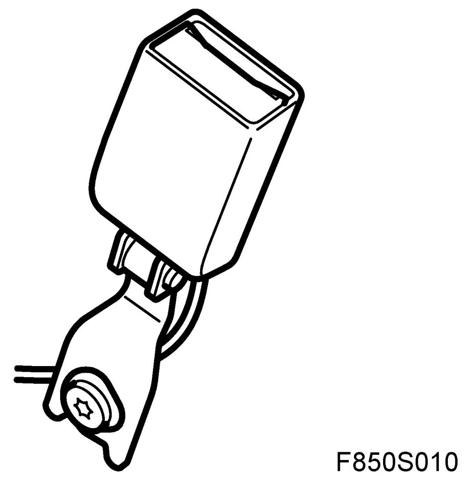
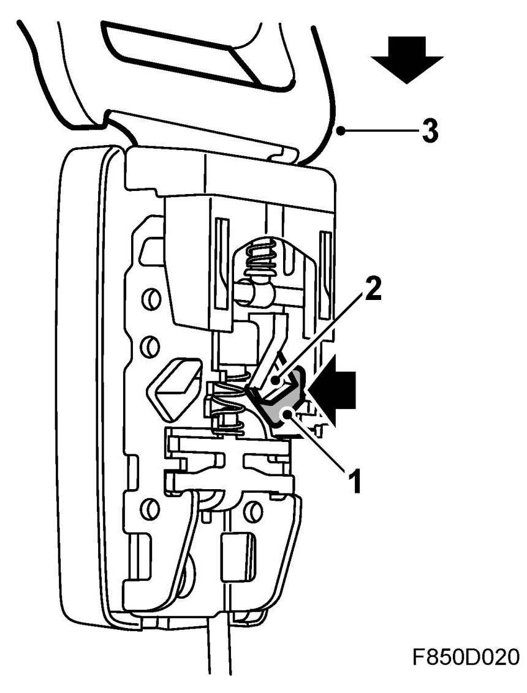
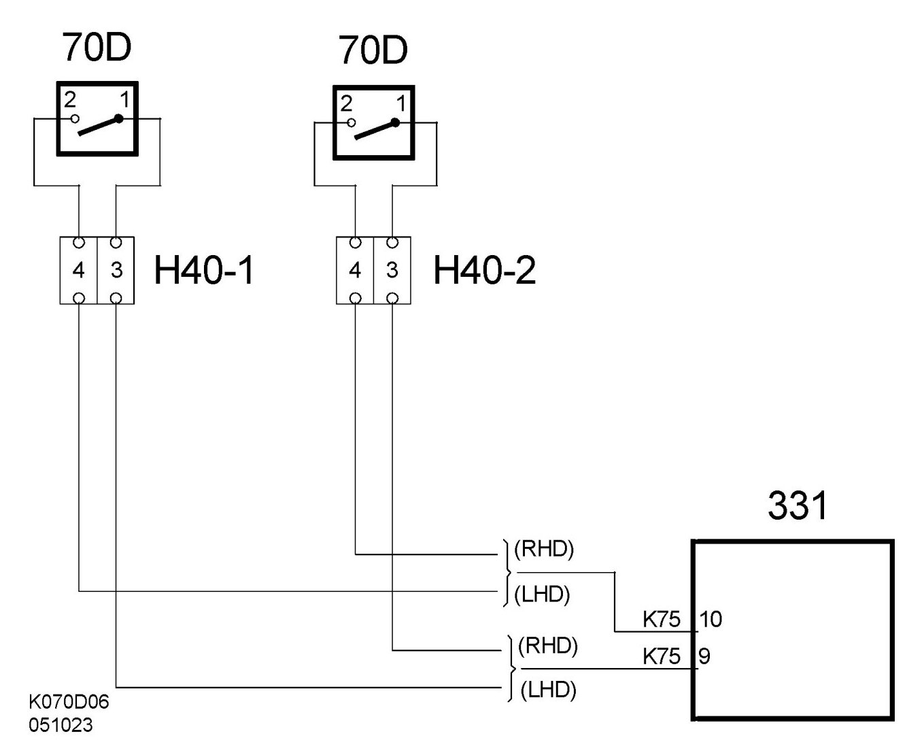
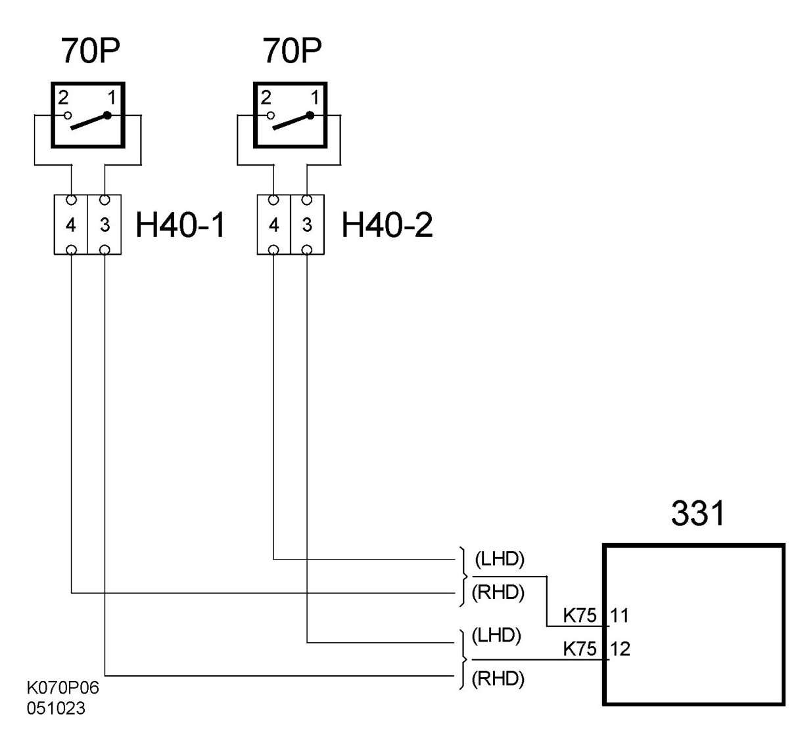

Belt Contact (70D/70P)
Belt Contact (70D/70P)
Location
Belt contact, driver (70D)
Belt contact, passenger (70P)

Main task
The purpose of the sensor is to determine if the seat-belt buckle is fastened or unfastened. Using information from the seat-belt buckle sensors and seat position sensors, the airbag control module determines how the belt tensioner detonation circuits should be activated and activates the seatbelt warning in the MIU and the SID. See Control Module information.
Type
The seat-belt buckle sensors consist of a Hall sensor containing a circuit board and a magnet.
1. Hall sensor

2. Magnet
3. Belt tongue
Connect
The driver's seatbelt buckle is supplied with voltage B+ to pin 1 from control module pin 9. The signal from seatbelt buckle pin 2 is connected to pin 10 on the control module.

The passenger seatbelt buckle is supplied with voltage B+ to pin 1 from control module pin 12. The signal from seatbelt buckle pin 2 is connected to pin 11 on the control module.
